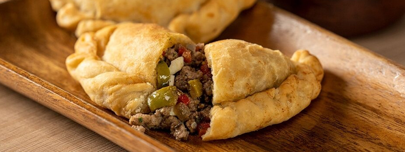
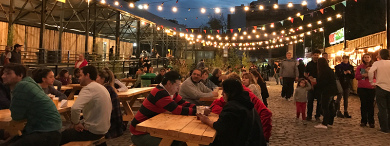

Dónde Comer
En este buscador, vas a poder filtrar por nombre, tipo de establecimiento y por barrio.
ver más
En este buscador, vas a poder filtrar por nombre, tipo de establecimiento y por barrio.
ver más
En buenos Aires vas a encontrar platos típicos y comida de todo el mundo.
ver más
Conoce los patios y mercados donde podés disfrutar de la mejor gastronomía de la ciudad.
ver más